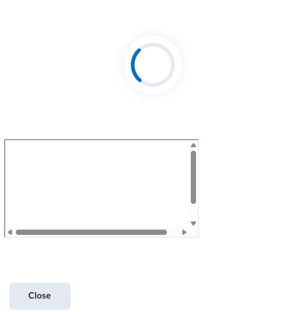
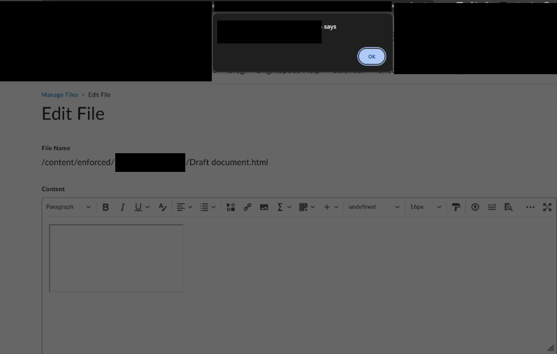
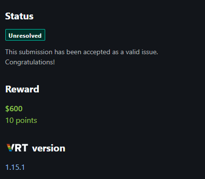

When Fate Stops You: A Bug Hunter Journey
After joining a private program at Bugcrowd, I pinged a friend and proposed collaborating if he was interested. He accepted, and we agreed to start on Sunday, if I remember correctly.
"If you fail to plan, you plan to fail."
When Sunday arrived, we began exploring the program. It was a really challenging program because it included many things I didn’t know existed. All the API routes were hidden in RPC calls.
After digging into the program, I initially found nothing (I'll discuss the mistake I made at this point later). I took a break, and around the same time, my friend messaged me that he was getting started.
After about two hours, my friend discovered a stored XSS (P2). When he sent it to me, I told him to wait. I checked the activity on Bugcrowd using the eye icon and saw that three stored XSS reports and many duplicates had already been submitted.
I told him it would be a waste of time to report it since it was obviously a duplicate, and we continued digging. My friend eventually stopped because he had important things to do.
I kept searching for business logic bugs and IDORs. After about three days, I revisited the same endpoint and thought, "Why not report it and see?"
At that time, I had moved on to another program I was working on. A few days later, triagers closed my report as a duplicate just two days after I submitted it. That meant my guess was wrong: if we had reported the bug initially, it would have been valid and rewarded with $600–$1,200.
I shared the duplicate notice with my friend, I'll leave out what he said to me! In the end, we said it wasn't our fate (rizq). I then moved on to another program, and my friend changed plans to work on other things.
Later, when the program was about to end in two days, I decided, "I swear I'll focus my efforts these last two days on finding an XSS."
The next day, I woke up determined to find an XSS. I turned on my PC with one screen, opened Burp Suite and my browser, and scoped the subdomain in my search.
By the way, my biggest mistake was scoping only a specific subdomain. I forgot to include all related domains and subdomains by using a wildcard (e.g., *.example.*), which would have captured every host under that domain. This little mistake close at me the door to see a lot of vulnerable subdomains that are out of scope but they effect the main app and ofc the program will accept it because it return sensitive data.
Back to the main story: after digging around in the app, I found a very interesting feature that was hidden allowed me to modify some public HTML files, and those files were accessible by high priviledge users. I thought, "Oh, there might be a stored XSS here."
I tried to modify an HTML file by injecting sample JavaScript code it return an error, I tried to put simple context like a h1 tag and capture the request and then modify it with any script tag, after doing it, it works, but after accessing the html file it ran inside a sandbox that prevented JavaScript execution. I tried everything I could, but I failed.

At this point i was 100% sure that i'm close to an XSS
I noticed that after clicking at edit again, the editor reflected the HTML content without filtering. The process worked like this: when editing an existing HTML file, the application would copy its content as HTML and paste it into the editor without escaping tags, so the code would be executed.

The attack scenario was straightforward: modify an HTML file to include JavaScript so that when any user clicks "Edit", the XSS triggers.
I was so happy at that moment that I quickly wrote and submitted my report. After three days, triagers confirmed that it was not a duplicate, and I was ecstatic.
Now, as I'm writing this blog post after earning $600, that i really don't care about it, I can say it was an amazing self-challenge.

What I really Learned: Fate intervened and left the find in someone else’s hands, yet instead of letting that stop me, I turned it into a personal challenge. Sometimes destiny rewrites our plans, but it’s up to us to pick ourselves back up, learn, and push forward.
Thanks for reading, and I hope you learned something!